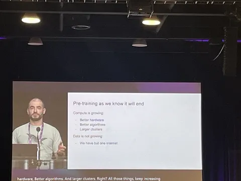

Доклад Ильи Суцкевера на NeurIPS уже разобрали на цитаты. Больше всего обсуждают идеи о росте агентности, конце претрейна и закона масштабирования. Нам удалось послушать доклад на конференции — делимся моментами, которые показались важными.
Нерезиновые данные
Претрейна на данных из интернета скоро не будет — всё, что можно, уже собрали, а синтетика просто копирует старое. Будущее за уникальными проприетарными датасетами, а успех моделей будет зависеть не от их размера, а от качества данных, на которых они обучаются.
Конец scaling law
Больше не работает scaling law, который до сих пор точно предсказывал рост качества моделей при увеличении данных и вычислений. Но это не значит, что прогресс остановится: как с законом Мура, новые этапы развития технологий откроют другие способы оптимизации.
Будущее за агентами (умными)
Сейчас модели чаще всего повторяют то, что уже видели на этапе обучения. Агенты же смогут самостоятельно анализировать ситуацию и придумывать новые стратегии. Точного рецепта для создания таких агентов пока нет, но Илья уверен, что это вопрос времени.
Интуитивность и непредсказуемость
Будущее будет связано с самосознанием систем. Пока что моделям не хватает умения находить нестандартные решения, они опираются на заранее заложенные шаблоны. Когда ИИ научится рассуждать по-настоящему, системы станут интуитивнее и одновременно непредсказуемее.
Эволюция как подсказка для ИИ
Идея в том, что ИИ может развиваться по принципам природы: адаптироваться, «мутировать» и улучшаться. Илья провёл аналогию между развитием интеллекта у животных и масштабированием моделей. Генетические алгоритмы уже используют для оптимизации архитектур, в будущем модели смогут разрабатывать такие алгоритмы сами.
В конце доклада Илья сказал: “All kinds of stuff is possible” — уже распечатали и повесили этот слайд в офисе.
ML Underhood
#YaNeurIPS
